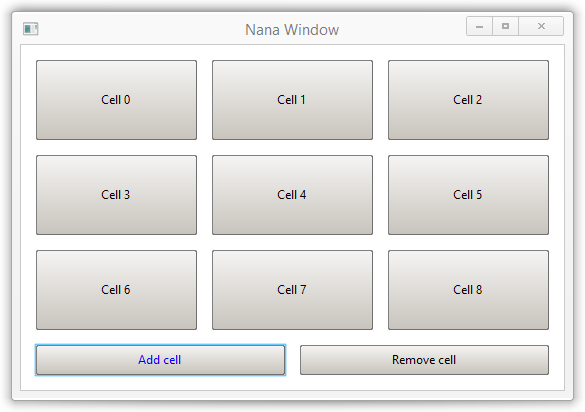

Class nana::panel
The class nana::panel implements a widget that acts as a window that contains other windows. The widgets whose windows would be contained by a panel must be constructed with the panel widget as the parent, which causes their windows to be positioned relative the panel, and to be clipped to the panel's window. After that, a place object can be optionally associated with the panel, and used to manage the layout of the panel's child widgets (see the examples at the bottom of this page).
The class is declared as follows:
template<bool HasBackground> class panel : public widget_object<typename std::conditional<HasBackground, category::widget_tag, category::lite_widget_tag>::type, drawerbase::panel::drawer>The bool template parameter determines which specialization of the widget_object template is the base class, which determines whether the panel is a regular widget, or a lite widget (which lacks a graphics buffer). In practice, this only determines whether the panel has a background or not.
The class is defined in header nana/gui/widgets/panel.hpp.
Member functions
In addition to the methods inherited from nana::widget and nana::widget_object<widget_tag, ...> (or nana::widget_object<lite_widget_tag, ...> if the bool template parameter is false), the class nana::panel defines the following methods:
| (constructors) | construct a nana::panel instance |
|||||
Parameters
|
||||||
| transparent | sets or gets the transparency state of the background | |||||
This method can enable transparency for the panel background, which can be useful if the containing form has an image as background, for example. Parameters
Return value(1) |
Usage details and examples
Basic example
This example places two buttons inside the window of a panel widget with yellow background, and places the window of the panel inside the window of a form widget, along with two other buttons:
#include <nana/gui.hpp>
#include <nana/gui/widgets/panel.hpp>
#include <nana/gui/widgets/button.hpp>
int main()
{
nana::form fm {nana::API::make_center(640, 480)};
fm.div("\
vert margin=15 \
<buttons_in_form gap=15> \
<weight=15> \
<panel> \
");
nana::button btn1 {fm, "Button 1"}, btn2 {fm, "Button 2"};
fm["buttons_in_form"] << btn1 << btn2;
// construct a panel with `fm` as the parent widget
// the template bool argument indicates whether the panel has background
// the constructor bool argument indicates the window visibility when created
nana::panel<true> pnl {fm, true};
fm["panel"] << pnl;
pnl.bgcolor(nana::colors::light_goldenrod_yellow); // yellow background
// layout management for the panel
nana::place plc {pnl};
plc.div("buttons_in_panel gap=15 margin=15");
// these buttons have the panel as parent, and are displayed inside the panel
nana::button btn3 {pnl, "Button 3"}, btn4 {pnl, "Button 4"};
plc["buttons_in_panel"] << btn3 << btn4;
// enact the layout rules immediately
fm.collocate();
fm.show();
nana::exec();
}Grid panel
The following example derives a class from nana::panel that acts as a container of widgets, and displays the widgets in a grid pattern of up to nine cells. The max number of cells can be easily modified in the code, as well as the type of the contained widgets (either by simply changing the hard-coded type insided the class, or the class could be made into a template that takes a type argument representing the type of the widgets).
The class place is used to manage the layout of the contained widgets, with the field attribute grid being used to form the grid pattern.
#include <nana/gui.hpp>
#include <nana/gui/widgets/button.hpp>
#include <nana/gui/widgets/panel.hpp>
class grid_panel : public nana::panel<false>
{
using cell = std::unique_ptr<nana::button>;
std::vector<cell> cells;
nana::place plc;
unsigned gap_ {15};
const std::vector<std::string> grid_configs
{
"",
"grid=[2,1]",
"grid=[2,2] collapse(0,1,2,1)",
"grid=[2,2]",
"grid=[3,2]",
"grid=[3,2]",
"grid=[3,3]",
"grid=[3,3]",
"grid=[3,3]"
};
public:
grid_panel() = delete;
grid_panel(nana::window w, bool visible = true)
{
create(w, {}, visible);
plc.bind(*this);
}
bool add_cell(const std::string &name)
{
if(cells.size() < grid_configs.size())
{
cells.push_back(std::make_unique<nana::button>(*this, name));
plc.div("<cells " + grid_configs[cells.size()-1] + " gap=" + std::to_string(gap_) + '>');
plc["cells"] << *cells.back();
plc.collocate();
return true;
}
return false;
}
bool remove_cell(const cell &cell)
{
if(!cells.empty())
{
auto i {std::find(cells.begin(), cells.end(), cell)};
if(i != cells.end())
{
for(auto &cell : cells)
plc.erase(*cell);
cells.erase(i);
if(!cells.empty())
{
plc.div("<cells " + grid_configs[cells.size()-1] + " gap=" + std::to_string(gap_) + '>');
for(auto &cell : cells)
plc["cells"] << *cell;
plc.collocate();
}
return true;
}
}
return false;
}
void gap(unsigned px)
{
gap_ = px;
auto divtext {plc.div()};
auto pos0 {divtext.find("gap=")};
if(pos0 != std::string::npos)
{
pos0 += 4;
auto pos1 {pos0};
while(isdigit(divtext[pos1]))
pos1++;
divtext.replace(pos0, pos1-pos0, std::to_string(gap_));
plc.div(divtext);
plc.collocate();
}
}
auto gap() const noexcept { return gap_; }
auto widget_size() const noexcept { return widget::size(); }
auto size() const noexcept { return cells.size(); }
auto& front() noexcept { return cells.front(); }
auto& back() noexcept { return cells.back(); }
auto& operator[](size_t pos) noexcept {return cells[pos]; }
const auto& operator[](size_t pos) const noexcept { return cells[pos]; }
auto& at(size_t pos) { return cells.at(pos); }
const auto& at(size_t pos) const { return cells.at(pos); }
};
int main()
{
using namespace nana;
form fm {API::make_center(543, 345)};
fm.div("\
vert margin=15 \
<grid_panel> \
<weight=15> \
<buttons weight=30 gap=15> \
");
fm.bgcolor(colors::white);
grid_panel grid {fm};
fm["grid_panel"] << grid;
button btnadd {fm, "Add cell"}, btndel {fm, "Remove cell"};
fm["buttons"] << btnadd << btndel;
btnadd.events().click([&]
{
grid.add_cell("Cell " + std::to_string(grid.size()));
});
btndel.events().click([&]
{
if(!grid.empty())
grid.remove_cell(grid.back());
});
fm.collocate();
fm.show();
nana::exec();
}